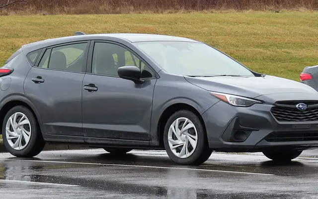

Par Motor › Precios por modelo › Subaru Impreza y XV
Precio de segunda mano · noviembre de 2026¿Cuánto vale un Subaru Impreza y XV de segunda mano?

Precio justo estimado de un Subaru Impreza y XV usado en España, año por año, con los kilómetros normales para su edad y en buen estado: de 5.900 € a 36.700 €. Para tasar el tuyo con sus kilómetros reales y su estado, usa el tasador gratis.
Precios del Subaru Impreza y XV por año
Impreza III (2007–2012)
Precio de nuevo: 1.5 107 CV, 18.500 € · 2.0 D 150 CV, 25.000 € · 2.0 150 CV, 22.000 €
| Año | Km normales | 1.5 107 CV · Gasolina | 2.0 D 150 CV · Diésel | 2.0 150 CV · Gasolina |
|---|---|---|---|---|
| 2012 | 100.000 km | 8.100 € | 10.600 € | 9.600 € |
| 2011 | 100.000 km | 7.600 € | 9.900 € | 9.000 € |
| 2010 | 100.000 km | 7.100 € | 9.300 € | 8.500 € |
| 2009 | 100.000 km | 6.700 € | 8.700 € | 7.900 € |
| 2008 | 100.000 km | 6.200 € | 8.200 € | 7.400 € |
| 2007 | 100.000 km | 5.900 € | 7.700 € | 7.000 € |
XV I (2012–2017)
Precio de nuevo: 1.6 114 CV, 23.000 € · 2.0 D 147 CV, 28.000 € · 2.0 150 CV, 26.000 €
| Año | Km normales | 1.6 114 CV · Gasolina | 2.0 D 147 CV · Diésel | 2.0 150 CV · Gasolina |
|---|---|---|---|---|
| 2017 | 100.000 km | 12.100 € | 16.300 € | 13.700 € |
| 2016 | 100.000 km | 11.900 € | 15.400 € | 13.400 € |
| 2015 | 100.000 km | 11.600 € | 14.400 € | 13.100 € |
| 2014 | 100.000 km | 11.300 € | 13.500 € | 12.800 € |
| 2013 | 100.000 km | 10.700 € | 12.700 € | 12.100 € |
| 2012 | 100.000 km | 10.100 € | 11.900 € | 11.400 € |
XV II (2017–2023)
Precio de nuevo: 1.6 114 CV, 25.000 € · 2.0 e-Boxer 150 CV, 31.000 € · 2.0 156 CV, 28.000 €
| Año | Km normales | 1.6 114 CV · Gasolina | 2.0 e-Boxer 150 CV · Híbrido | 2.0 156 CV · Gasolina |
|---|---|---|---|---|
| 2023 | 50.000 km | 19.500 € | 25.300 € | 21.800 € |
| 2022 | 65.000 km | 18.200 € | 23.800 € | 20.400 € |
| 2021 | 80.000 km | 16.400 € | 21.400 € | 18.400 € |
| 2020 | 95.000 km | 14.400 € | 18.800 € | 16.200 € |
| 2019 | 100.000 km | 13.700 € | 17.800 € | 15.300 € |
| 2018 | 100.000 km | 13.400 € | 17.500 € | 15.100 € |
| 2017 | 100.000 km | 13.200 € | 17.200 € | 14.800 € |
Crosstrek (2023–hoy)
Precio de nuevo: 2.0 e-Boxer 136 CV, 34.000 €
| Año | Km normales | 2.0 e-Boxer 136 CV · Híbrido |
|---|---|---|
| 2026 | 5.000 km | 36.700 € |
| 2025 | 20.000 km | 31.600 € |
| 2024 | 35.000 km | 29.700 € |
| 2023 | 50.000 km | 27.800 € |
Kilómetros normales: 15.000 al año en gasolina, híbridos y eléctricos, y 20.000 en diésel, con un máximo de 100.000 km (por encima no tasamos: el precio depende demasiado del historial de cada coche). Cifras redondeadas a 100 €.
Preguntas frecuentes
¿Cuánto vale un Subaru Impreza y XV de segunda mano?
Según el año, la versión y los kilómetros, un Subaru Impreza y XV usado vale hoy de 5.900 € a 36.700 € en España. El más barato de nuestra tabla es un 1.5 de 2007 (5.900 €) y el más caro un 2.0 e-Boxer de 2026 (36.700 €). Son precios justos estimados entre particulares y profesionales, con los kilómetros normales para su edad y en buen estado.
¿Qué motorizaciones tiene el Subaru Impreza y XV?
En nuestra base de datos hay versiones gasolina, diésel y híbrido, en 4 generaciónes: Impreza III, XV I, XV II y Crosstrek.
¿Cómo sé si me piden demasiado por un Subaru Impreza y XV?
Abre el tasador de Par Motor, elige el Subaru Impreza y XV, el año y los kilómetros reales, y escribe lo que te piden. Te diremos si está por debajo del precio justo (chollo) o por encima (caro). Es gratis y no pide registro ni matrícula.
Historia y curiosidades
Otros Subaru
Compara su coste real
El precio de compra es solo una parte. Mira cuánto te costaría al mes con combustible, seguro, neumáticos, mantenimiento y lo que pierde de valor.
Abrir el comparador →